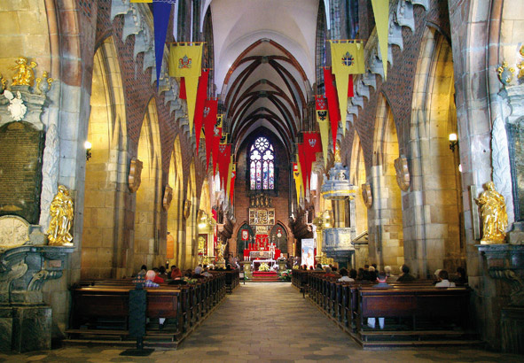
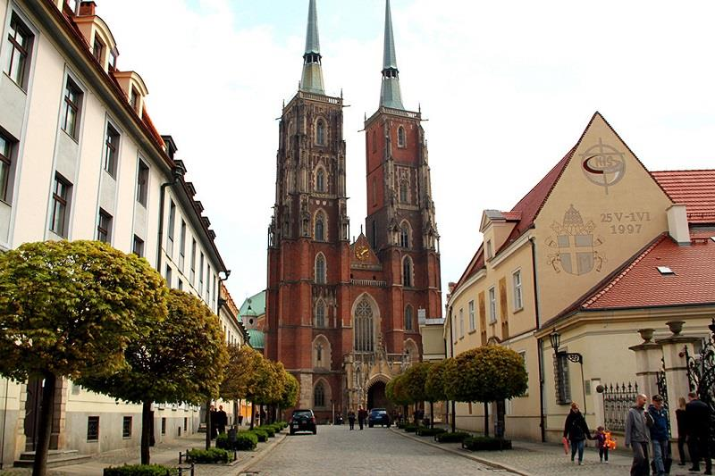

005 : Katedra Wrocławska
Archikatedra św. Jana Chrzciciela we Wrocławiu jest to rzymskokatolicki gotycki kościół parafialny, a także katedralny biskupów wrocławskich zlokalizowany na wrocławskim Ostrowie Tumskim przy placu Katedralnym.
"(...) nie pożądaj żadnej rzeczy należącej do bliźniego - lecz jeśli tą rzeczą jest życie... Trzeba pożądać, należy zazdrościć."
Jacek Dukaj

